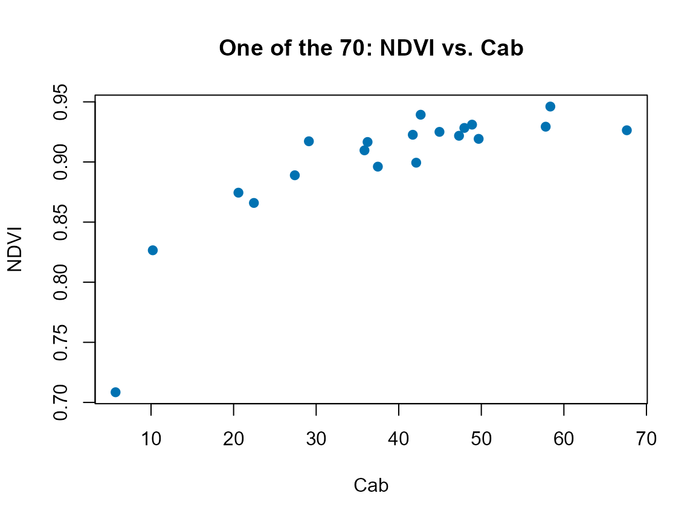

08. Vegetation Indices and Spectral Features
08-vegetation-indices.Rmd
library(ToolsRTM)ToolsRTM ships five functions with
“indices” in the name. They are not interchangeable, and the package’s
own naming doesn’t make the distinction obvious – this page exists to
clear that up before using any of them.
| Function | Input shape | Spectral basis | Index set | Typical use |
|---|---|---|---|---|
getIndices() |
Tabular: many rows, R.<wavelength> columns
(native 1nm) |
Native spectrum, domain-limited
("VNIR"/"SWIR"/"VNIR-SWIR") |
~75 indices, full domain-appropriate set | LUTs at native resolution (Tutorials 05-06) |
getIndicesSE2() |
Tabular: many rows, B1-B12 columns
(Sentinel-2 bands) |
Sentinel-2A/2B band centers | 70 named indices – the full literature set (NDVI, RDVI, MCARI, REIP, SIPI, …) | Exploratory analysis: which specific, citable index correlates with a trait |
getIndicesSE2.ML() |
Same as getIndicesSE2()
|
Same |
31 indices – a curated subset of the 70,
decorrelated/simplified for regression, plus two ML-oriented additions
(kNDVI, NDVIv) not in the full set |
Feature engineering for get.inversion()/ML models
(Tutorials 10-12) |
getSpectraIndices() |
Spatial: a folder of GeoTIFF images (not a data.frame of spectra) | Sentinel-2A only (currently) | Any one index, or 'All', computed per pixel across
every image in the folder |
Batch/time-series index maps from real imagery |
getSpatial_index() |
Spatial: one GeoTIFF image at a time | Sentinel-2A only (currently) | Any one index, or 'All', computed per pixel |
A single-scene version of the above, used internally by
getSpatialTrait()’s trait-mapping workflow |
Verified directly (same 20-row LUT, convolved to Sentinel-2A,
Tutorial 05-07’s own pipeline): getIndicesSE2() returned 66
non-constant columns and getIndicesSE2.ML() returned 30 on
that particular sample – close to their full 70/31-index design sets,
with a couple dropped as constant or non-finite for this specific draw
(both functions drop those automatically, same defensive pattern used
throughout this package).
1. getIndices(): native-resolution, tabular
LUT <- as.data.frame(getLUT(inputs = ToolsRTM::inputsPROSAIL, nLUT = 20, setseed = 1))
rsoil <- rep(0.15, 2101)
refl <- t(sapply(seq_len(20), function(i) {
foursail(inputLUT = LUT[i, ], rsoil = rsoil, LeafModel = "PROSPECT-D")$rsot
}))
colnames(refl) <- paste0("R.", 400:2500)
idx_native <- suppressMessages(getIndices(as.data.frame(refl), pattern.rfl = "R.", spectral.domain = "VNIR"))
#> [1] "Estimating indices using VNIR domain..."
#> | | | 0% | |==== | 5% | |======= | 10% | |========== | 15% | |============== | 20% | |================== | 25% | |===================== | 30% | |======================== | 35% | |============================ | 40% | |================================ | 45% | |=================================== | 50% | |====================================== | 55% | |========================================== | 60% | |============================================== | 65% | |================================================= | 70% | |==================================================== | 75% | |======================================================== | 80% | |============================================================ | 85% | |=============================================================== | 90% | |================================================================== | 95% | |======================================================================| 100%
cat("Columns after adding indices:", ncol(idx_native), "(", ncol(refl), "reflectance +", ncol(idx_native) - ncol(refl), "indices)\n")
#> Columns after adding indices: 2176 ( 2101 reflectance + 75 indices)2. getIndicesSE2() vs. getIndicesSE2.ML():
sensor-band, full vs. curated
Both take Sentinel-2 band-named columns
(B1…B12), not the native spectrum – convolve
first (Tutorial 07):
refl_X <- as.data.frame(refl); colnames(refl_X) <- paste0("X", 400:2500); refl_X <- cbind(id = 1:20, refl_X)
se2a <- suppressMessages(get.spectra.convolved(rfl = refl_X, sensor = "Sentinel2a", plot.spectra = FALSE))
#> [1] "Spectral resampling function to SENTINEL2A is being processed ..."
#> | | | 0% | |===== | 8% | |=========== | 15% | |================ | 23% | |====================== | 31% | |=========================== | 38% | |================================ | 46% | |====================================== | 54% | |=========================================== | 62% | |================================================ | 69% | |====================================================== | 77% | |=========================================================== | 85% | |================================================================= | 92% | |======================================================================| 100%
names(se2a) <- c("id", "B1","B2","B3","B4","B5","B6","B7","B8","B8A","B9","B10","B11","B12")
idx_full <- suppressMessages(getIndicesSE2(df = se2a[, -1], sensor = "Sentinel-2a", df.data = NULL, fast.process = TRUE))
#> | | | 0% | |==== | 5% | |======= | 11% | |=========== | 16% | |=============== | 21% | |================== | 26% | |====================== | 32% | |========================== | 37% | |============================= | 42% | |================================= | 47% | |===================================== | 53% | |========================================= | 58% | |============================================ | 63% | |================================================ | 68% | |==================================================== | 74% | |======================================================= | 79% | |=========================================================== | 84% | |=============================================================== | 89% | |================================================================== | 95% | |======================================================================| 100%
cat("getIndicesSE2() (full set):", ncol(idx_full), "indices\n")
#> getIndicesSE2() (full set): 66 indices
idx_ml <- suppressMessages(getIndicesSE2.ML(df = se2a[, -1], sensor = "Sentinel-2a", df.data = NULL, fast.process = TRUE))
#> | | | 0% | |==== | 5% | |======= | 11% | |=========== | 16% | |=============== | 21% | |================== | 26% | |====================== | 32% | |========================== | 37% | |============================= | 42% | |================================= | 47% | |===================================== | 53% | |========================================= | 58% | |============================================ | 63% | |================================================ | 68% | |==================================================== | 74% | |======================================================= | 79% | |=========================================================== | 84% | |=============================================================== | 89% | |================================================================== | 95% | |======================================================================| 100%
cat("getIndicesSE2.ML() (curated):", ncol(idx_ml), "indices\n")
#> getIndicesSE2.ML() (curated): 30 indices
cat("In the ML set but NOT the full set:", setdiff(names(idx_ml), names(idx_full)), "\n")
#> In the ML set but NOT the full set: CR.Brown NDVIv kNDVIkNDVI (kernel NDVI) and NDVIv are the two
ML-oriented additions – kNDVI in particular is documented
in the remote-sensing literature as behaving better as a regression
predictor than plain NDVI (less saturation at high biomass), which is
exactly the kind of index worth having in a curated ML feature set even
though it isn’t one of the “classic” 70.
plot(LUT$Cab, idx_full$NDVI, pch = 19, col = "#0072B2",
xlab = "Cab", ylab = "NDVI", main = "One of the 70: NDVI vs. Cab")
3. Spatial indices: getSpectraIndices() and
getSpatial_index()
Both work on real GeoTIFF imagery, not simulated spectra – not runnable here without real Sentinel-2 scenes on disk, but their signatures show the distinction clearly:
# getSpectraIndices(): a whole FOLDER of images (e.g. a time series),
# looped per file, with a progress bar and optional export -- Sentinel-2A
# only for now.
getSpectraIndices(rasterFiles = "path/to/tif_folder/", Sensor = "Sentinel2a",
SpectraltoCompute = "NDVI", factorR = 1/10000,
path.export = "path/to/output/")
# getSpatial_index(): ONE image in, one (or 'All') index map(s) out -- no
# folder loop, no progress bar; the building block getSpatialTrait() itself
# calls internally when producing a spatial trait map.
getSpatial_index(rasterFiles = "path/to/one_scene.tif", Sensor = "Sentinel2a",
SpectraltoCompute = "NDVI", factorR = 1/10000)Tutorial 14 uses this spatial path for real, on an actual Sentinel-2 image retrieved via STAC, to produce a genuine 2D index/trait map.
Which one should you use?
What are you computing indices from?
|
+-- A LUT / many simulated spectra at native (1nm) resolution
| |
| v
| getIndices()
|
+-- Sentinel-2 band-level reflectance (simulated or real)
| |
| +-- Exploring which named index matters
| | -> getIndicesSE2() (full 70-index set)
| |
| +-- Feeding indices into an ML/inversion model
| -> getIndicesSE2.ML() (31-index curated set)
|
+-- Real GeoTIFF imagery (a spatial map, not a spectrum table)
|
+-- One scene -> getSpatial_index()
+-- Many scenes / a time series -> getSpectraIndices()What’s next
- Tutorial 09 – formal sensitivity analysis: which traits actually drive which indices and bands, and by how much.
-
Tutorial 11 – using
getIndicesSE2.ML()’s curated set as ML predictor features alongside raw bands.